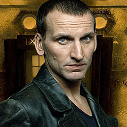

| Home | The Doctors | The Companions | The Villains |
|
|||
| cf
The Ninth DoctorThe sole survivor of the Last Great Time War, scarred by the terrible things he’d seen and done, the Ninth Doctor was an intense and emotional incarnation. Hiding his psychological trauma behind madcap wit and frivolity, he took Rose Tyler to see the end of the world, inspired Charles Dickens and showed that for once, everybody could live. He was still capable of great cruelty and anger though, killing Cassandra and torturing a lone Dalek into submission. After Rose defeated the Daleks using the power of the time vortex, the Doctor saved her by transferring that dangerous power into his own body. The strain destroyed his every cell and as Rose watched, his body exploded with raging energy… |